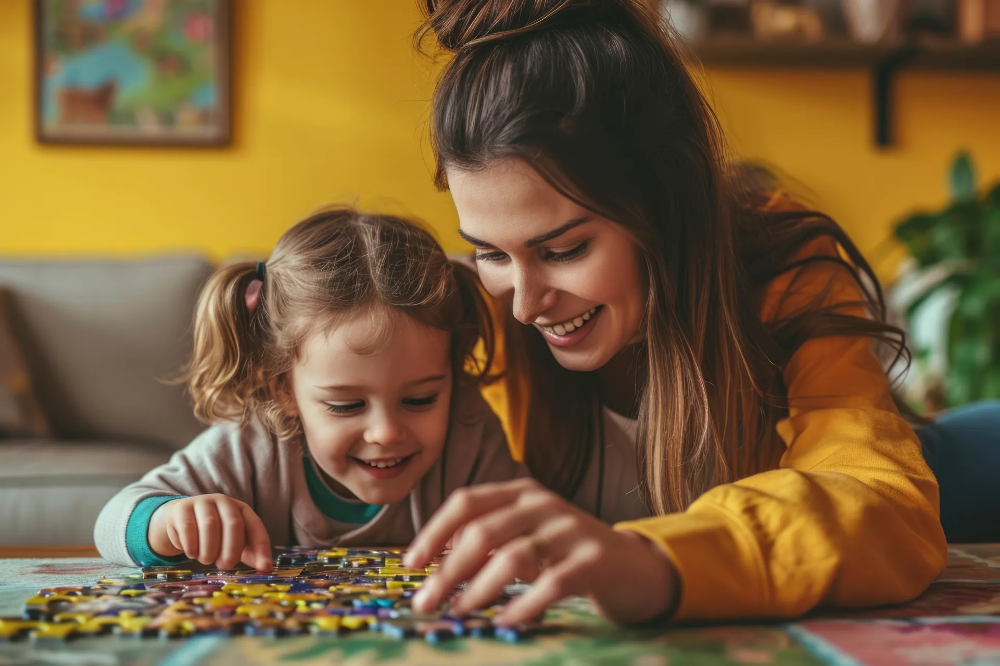

Acolhimento às famílias
Um espaço de escuta e conexão para quem vive a rotina do cuidado.
A AMABA acolhe, orienta e fortalece mães, cuidadoras e famílias de pessoas autistas em Balsas.

Juntas, construímos uma rede de acolhimento.
A AMABA surgiu da união de mães em busca de acolhimento, orientação e apoio. Desde 2020, trabalha para fortalecer mães, cuidadoras e famílias de pessoas autistas em Balsas.
Acreditamos na força de uma rede em que ninguém precisa cuidar sozinha.
Conheça nossa história
Ações que aproximam famílias, informação e oportunidades de cuidado.
Um espaço de escuta e conexão para quem vive a rotina do cuidado.
Compartilhamento de informações e caminhos de apoio para as famílias.
Atenção a quem acompanha, cuida e sustenta essa jornada todos os dias.
Encontros que aproximam pessoas e fortalecem a comunidade.
Mobilização de recursos para apoiar as ações da associação.
Construção de pontes com profissionais, empresas e instituições.
Conheça as iniciativas que dão vida à nossa rede de apoio.

Os projetos e as atividades da associação serão apresentados aqui à medida que seus detalhes e imagens forem autorizados para publicação.
Fale com a AMABAConteúdos institucionais serão publicados após validação da AMABA.
Em breve, este espaço reunirá novidades, campanhas e informações sobre as ações da AMABA.
Entre em contatoNo momento, não há eventos programados para divulgação. Acompanhe este espaço para saber das próximas atividades.
Fale com a AMABAVocê pode contribuir com a AMABA de diferentes formas. Toda ajuda fortalece a rede de cuidado.
Empresas, instituições e profissionais podem somar forças com a AMABA.
Compartilhe seu conhecimento e participe das iniciativas da associação.
Contribua por meio das formas oficiais de apoio divulgadas pela AMABA.
As formas oficiais de contribuição serão informadas pela associação.
A AMABA nasceu para criar uma rede de acolhimento, orientação e apoio. Queremos ouvir você.
Fale com a AMABA
Parcerias ajudam a ampliar o alcance do acolhimento e das ações da associação. Os apoiadores serão apresentados aqui após autorização institucional.
Quero ser parceiroQuer conhecer a associação, buscar orientação, apoiar uma ação ou propor uma parceria? Os canais oficiais de atendimento serão divulgados aqui após confirmação pela AMABA.